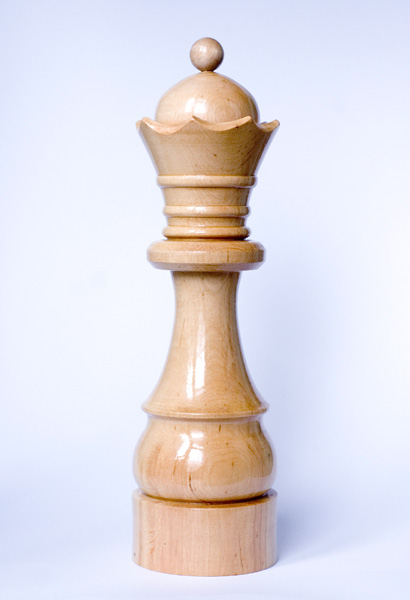
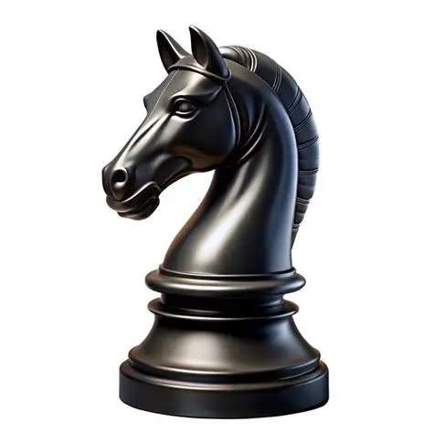
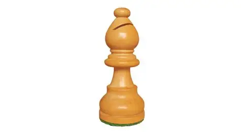
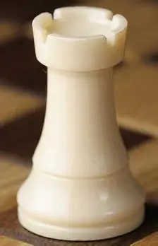

Przegląd najważniejszych figur i elementów królewskiej gry

Najpotężniejsza figura na szachownicy. Łączy możliwości gońca i wieży, poruszając się w dowolnym kierunku o dowolną liczbę pól. To kluczowy element strategii ofensywnej.

Jedyna figura, która potrafi przeskakiwać inne. Porusza się po charakterystycznym kształcie litery „L”. Niezastąpiony w taktycznych kombinacjach i zaskakujących atakach.

Porusza się po przekątnych, zawsze pozostając na polach jednego koloru. W duecie z drugim gońcem tworzy silną parę, kontrolującą duże obszary szachownicy.

Silna figura liniowa, poruszająca się pionowo lub poziomo. Szczególnie groźna w końcówkach, gdzie jej mobilność pozwala dominować nad przeciwnikiem.